Universidad Central de Venezuela · Facultad de Ciencias · Escuela de Computación
Diseño e implementación de un modelo de mantenimiento asistido por inteligencia artificial para una arquitectura de microservicios en el sistema PortalAsig
Trabajo Especial de Grado
Agenda
Contenido de la presentación
- Contexto y planteamiento del problema
- Objetivos del trabajo
- Marco conceptual (síntesis)
- Solución: microservicios, frontend y PAIMA
- Validación y resultados
- Conclusiones, limitaciones y trabajo futuro
Los colaboradores que mantienen PortalAsig permanecen en el proyecto entre uno y dos semestres. Cada vez que uno se va, el conocimiento se va con él.
— El problema que motiva este trabajo
Sección
Contexto y problema
Un sistema crítico para la Facultad, con un backend estancado y un modelo de mantenimiento insostenible.
Contexto
PortalAsig: una década de evolución
PortalAsig 2: backend Node.js/Express monolítico, frontend AngularJS.
Frontend migrado a Vue.js (TEG de Vásquez Balza). El backend queda intacto.
Seis años de cambios incrementales sobre el monolito, sin mantenimiento sistemático.
Este trabajo: rediseño del backend y autogestión del mantenimiento con IA.
Problema
El backend monolítico hoy
- Un único proceso concentra todos los dominios: autenticación, sitios, evaluaciones, correos, foros…
- Un controlador de 3.629 líneas gestiona 18 dominios de negocio
- Sin pruebas automatizadas ni observabilidad
- Despliegue manual, infraestructura on-premise
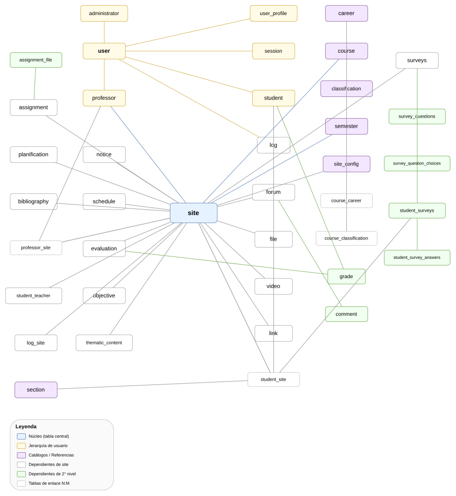
Problema
…pero el problema de fondo es humano
Deuda técnica
Seis años de cambios sin proceso sistemático: código densificado, dominios acoplados, cero validación automatizada.
Conocimiento tácito
Colaboradores temporales de 1–2 semestres, sin documentación exhaustiva ni transferencia formal: el saber se pierde en cada rotación.
Sin equipo DevOps
Infraestructura on-premise y despliegue manual. Toda herramienta compleja se convierte en pasivo para el siguiente colaborador.
Objetivos
Objetivo general y específicos
Objetivo general
Diseñar e implementar una arquitectura de microservicios para el backend de PortalAsig, adaptar el frontend heredado como cliente de esa arquitectura distribuida e incorporar técnicas sistemáticas de mantenimiento asistidas por inteligencia artificial.
- Documentar el estado actual y caracterizar sus dominios
- Diseñar la arquitectura de microservicios desacoplada
- Adaptar el frontend heredado como cliente distribuido
- Implementar aseguramiento sistemático de calidad
- Diseñar e implementar PAIMA: ciclo MAPE-K con IA
- Instrumentar observabilidad distribuida
- Evaluar el ecosistema con pruebas y experimentos
Visión de la solución
Tres líneas de transformación
① Backend → Microservicios
Dominios acotados UAA, Site y Notify; cada uno con su base de datos, su versionado y su despliegue autónomo.
② Frontend adaptado
El cliente Vue.js heredado se reestructura para operar contra la arquitectura distribuida con OAuth2/JWT.
③ PAIMA
Servicio de autogestión del mantenimiento: monitorea, diagnostica con IA y propone acciones. El humano aprueba.
Más una cuarta transversal: técnicas sistemáticas de mantenimiento (calidad, pruebas y observabilidad) sobre todo el ecosistema.
Sección
Marco conceptual
Tres ideas que sustentan el trabajo: microservicios, computación autonómica y el ciclo MAPE-K.
Marco conceptual
De monolito a microservicios
Arquitectura monolítica
- Un proceso y una base de datos para todo
- Fallos sin aislamiento entre dominios
- Despliegue acoplado: todo o nada
- Escala el sistema completo, no lo que se necesita
Microservicios
- Servicios autónomos por dominio de negocio
- Aislamiento de fallos entre servicios
- Despliegue y versionado independientes
- Escalado selectivo por servicio
A cambio, introduce complejidad operativa: más procesos, más bases de datos, monitoreo distribuido. Esa complejidad es la que aborda PAIMA.
Marco conceptual
Computación autonómica: el ciclo MAPE-K
M · Monitor
Recolecta métricas, logs y eventos del entorno gestionado.
A · Analyze
Interpreta síntomas, detecta anomalías y las clasifica.
P · Plan
Decide la acción de remediación a partir del diagnóstico.
E · Execute
Aplica la acción sobre el sistema y verifica el resultado.
K · Knowledge
Base de conocimiento que retroalimenta cada fase del ciclo.
+ IA
Línea de investigación reciente: delegar Analyze y Plan en modelos de lenguaje. PAIMA implementa esta idea.
Marco conceptual
Stack tecnológico seleccionado
| Categoría | Tecnologías | Rol en el ecosistema |
|---|---|---|
| Framework de microservicios | Spring Boot (Java) | Servicios UAA, Site, Notify y PAIMA |
| Persistencia | MySQL + Flyway | Una BD por servicio, esquema versionado |
| Calidad continua | Checkstyle · Testcontainers · JaCoCo · GitHub Actions | Validación automática en cada pull request |
| Observabilidad | Prometheus · Grafana · Loki | Métricas, tableros y agregación de logs |
| Pruebas | JUnit · Cypress · k6 | Integración, end-to-end y carga |
| Inteligencia artificial | LLM local o remoto, configurable | Diagnóstico y planificación en PAIMA (con fallback determinista) |
| Infraestructura | Docker Compose · Nginx · Config Server | Orquestación local, proxy y configuración centralizada |
Sección
Solución
Microservicios + mantenimiento sistemático + autogestión con inteligencia artificial.
Solución
Arquitectura general del ecosistema
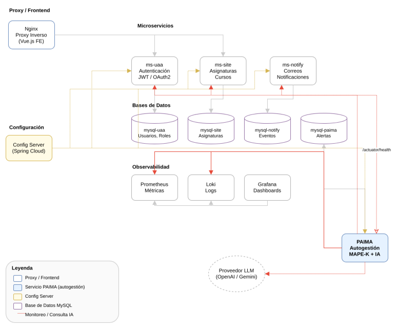
Solución
Descomposición en dominios acotados
UAA · Identidad y acceso
Usuarios, roles y autenticación OAuth2/JWT con emisión y refresco de tokens.
Site · Núcleo académico
Cursos, semestres, sitios académicos, secciones, horarios y evaluaciones.
Notify · Notificaciones
Renderizado y despacho de correos electrónicos del ecosistema.
PAIMA · Autogestión
Ciclo MAPE-K con IA: vigilancia, diagnóstico y remediación asistida.
Transversales: Commons · librería compartida Config Server · configuración centralizada
Solución
Database per service
Cada dominio posee y versiona su propio esquema MySQL: se elimina el acoplamiento por base de datos.
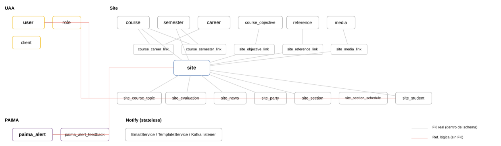
Mantenimiento sistemático
La calidad deja de depender del conocimiento tácito
- Pipeline en cada pull request: Checkstyle → pruebas de integración con Testcontainers (BD real) → cobertura JaCoCo
- Branch protection: si un check falla, el merge queda bloqueado
- Validación sistemática y reproducible, no manual ni dependiente de memoria
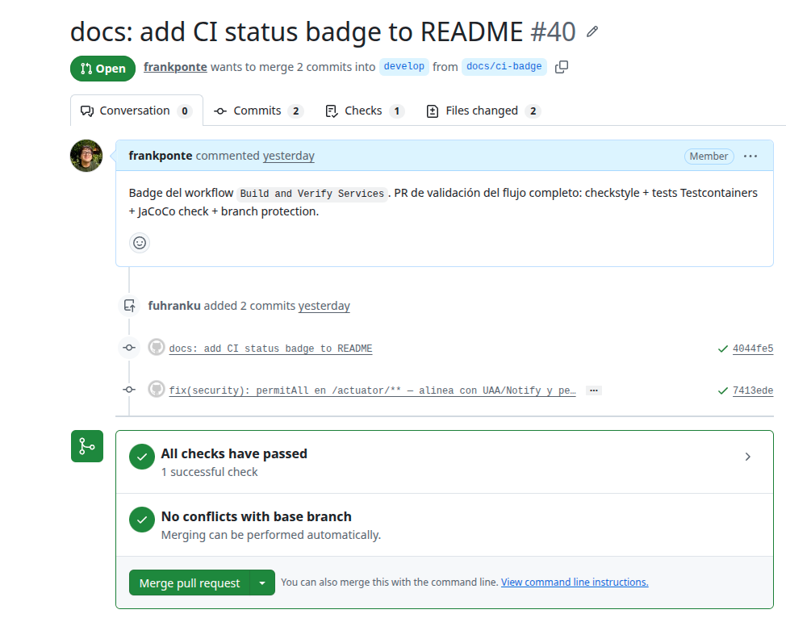
Mantenimiento sistemático
Esquema versionado con Flyway
- Migraciones SQL incrementales:
V{versión}__{descripción}.sql - El esquema se construye progresivamente y de forma reproducible
- Un colaborador nuevo levanta la base de datos sin conocimiento tácito
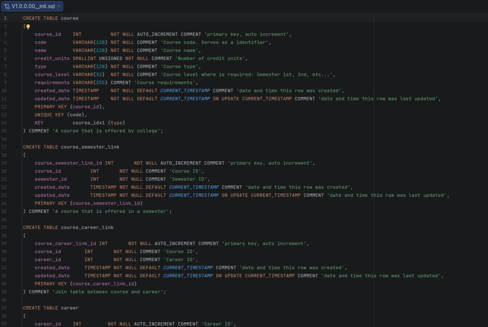
Solución
El frontend heredado se adapta, no se reescribe
- Store Vuex reestructurado en módulos por dominio, alineados con los microservicios
- Guards de navegación con 7 niveles de permisos (estudiante → administrador)
- Múltiples instancias Axios que reflejan la topología: UAA, Site, PAIMA
- Sesión en dos capas: client_credentials (aplicación) + login de usuario con refresh token en cookies
Se sigue el precedente del TEG de 2020: evolución controlada en lugar de reescritura completa.
Solución
Autenticación OAuth2/JWT de extremo a extremo
- Se reemplaza la autenticación propietaria por OAuth2/JWT estándar
- Token de aplicación (client_credentials) + token de usuario con refresh
- CORS configurado por microservicio; flujo validado E2E con Cypress
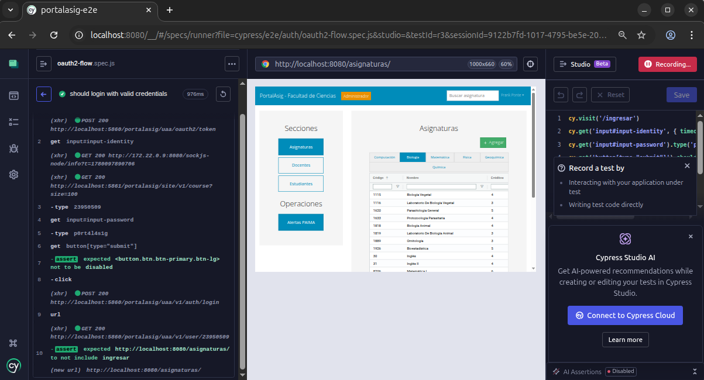
Solución · Autogestión
PAIMA: PortalAsig Intelligent MAPE-K
- Se construye sobre la observabilidad ya instalada: Prometheus, Loki, Grafana
- Las fases Analyze y Plan se delegan a un LLM — proveedor configurable con fallback determinista
- Human-in-the-loop: el operador evalúa y aprueba cada acción antes de ejecutarse
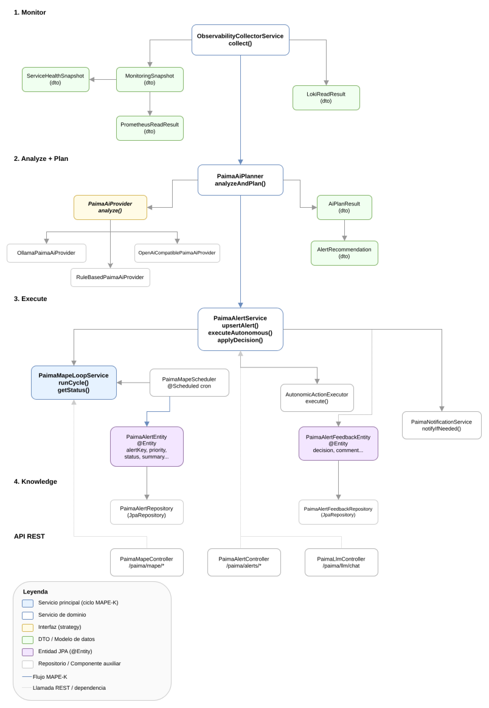
Solución · Autogestión
Operación pensada para quien llega “en frío”
- Salud del ecosistema en un vistazo: servicios, incidentes activos, métricas
- Logs y métricas consolidados por servicio en un solo panel
- Reduce la curva de entrada de un nuevo mantenedor
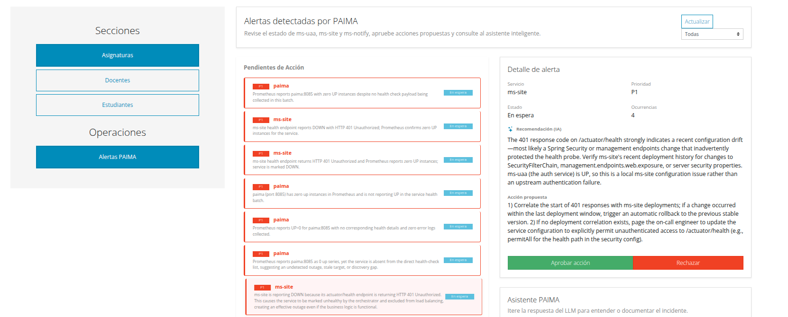
Solución · Autogestión
IA que propone, humano que decide
- El operador conversa con el asistente sobre la incidencia detectada
- La IA clasifica, diagnostica y propone la acción de remediación
- Nada se ejecuta sin aprobación explícita del operador
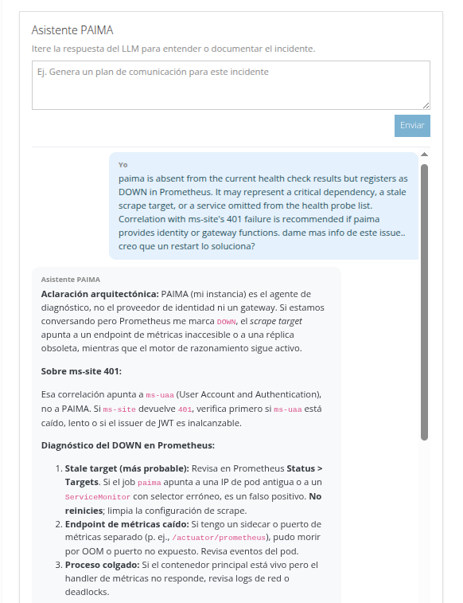
Sección
Validación y resultados
Cuatro dimensiones de evaluación: integración, end-to-end, rendimiento y resiliencia.
Validación
Estrategia de pruebas en cuatro dimensiones
| Dimensión | Qué mide | Herramientas | Criterio |
|---|---|---|---|
| Integración | Cobertura de líneas y ramas | JaCoCo + GitHub Actions | Umbral 70% líneas / 60% ramas |
| End-to-end | Flujos completos de usuario | Cypress | Suite estable en verde |
| Rendimiento | Latencia p95/p99, throughput, errores | k6 + Prometheus | Comparativo frente al monolito |
| Resiliencia | Detección y recuperación de fallos | Simulación de caos + PAIMA | Recuperación asistida validada |
Entorno: Docker Compose local, datos anonimizados, diseño experimental reproducible.
Resultados · Integración
Cobertura medida y exigida automáticamente
De cero a cobertura medida y exigida en cada cambio: la calidad se volvió sistemática.
Resultados · End-to-end
Flujos de usuario validados con Cypress
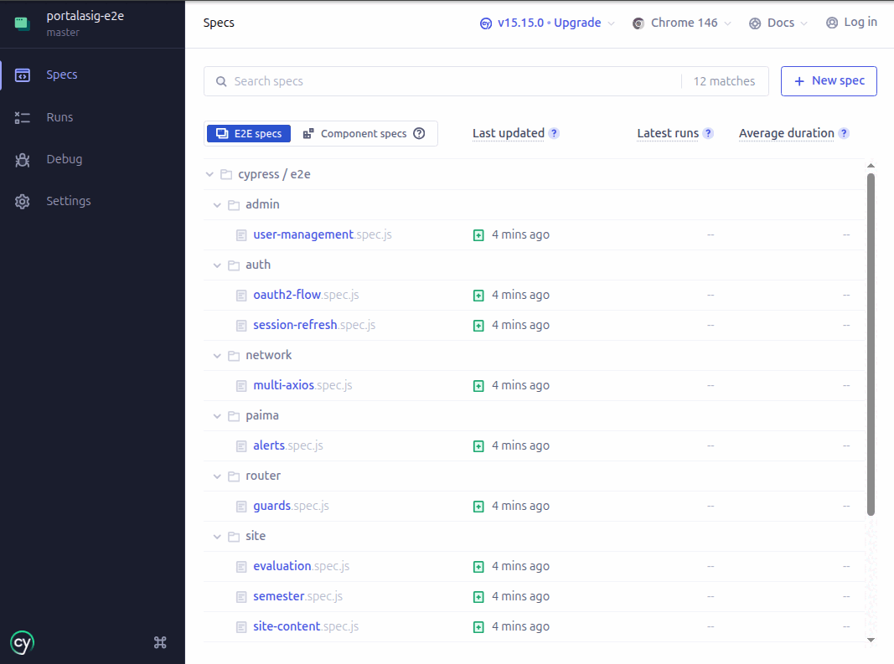
Resultados · Rendimiento
Benchmarking con k6
- 50 usuarios virtuales, 3 escenarios con endpoints equivalentes; ambas arquitecturas desplegadas en local con idénticos recursos
- Métricas: p95/p99, throughput, tasa de error + CPU/memoria en Prometheus
- Hipótesis: el monolito exhibe mayor latencia bajo concurrencia
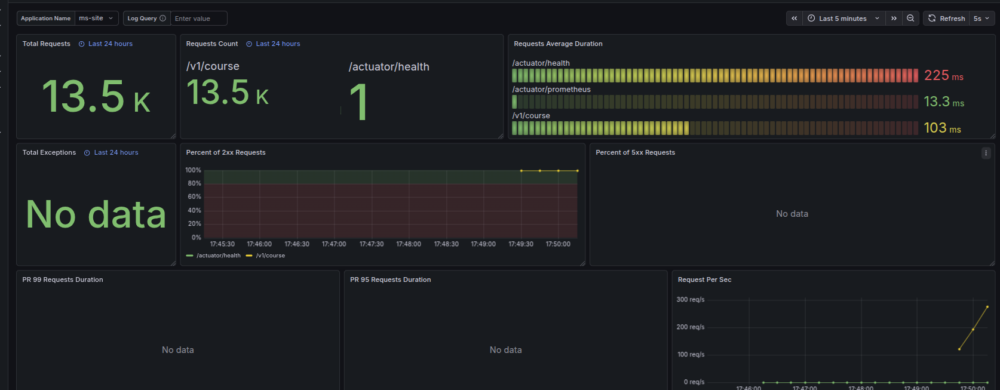
Resultados · Resiliencia
Simulación de caos: caída de un servicio
Se detiene ms-site deliberadamente; el resto del ecosistema sigue operando.
PAIMA detecta la caída vía health checks en su ciclo de monitoreo.
Clasifica la incidencia y notifica al administrador por correo.
El operador consulta al asistente y aprueba la acción de reinicio.
PAIMA ejecuta el reinicio; el servicio vuelve a estado saludable.
Resultados · Resiliencia
La evidencia del experimento
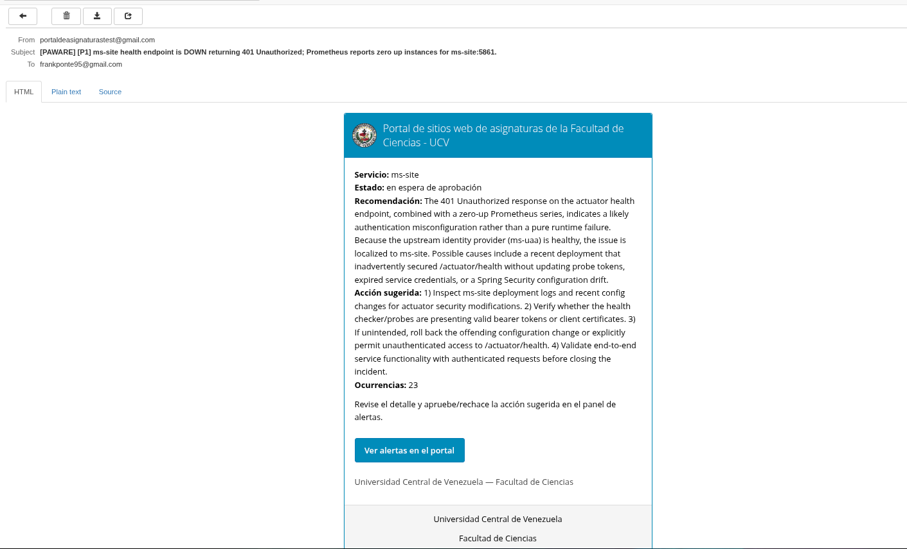
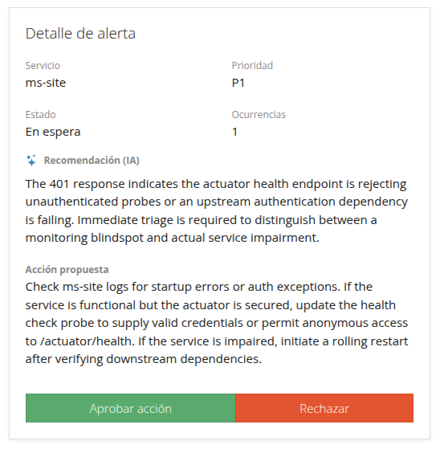
Resultados
Análisis comparativo global
| Dimensión | Monolito legacy | Ecosistema de microservicios |
|---|---|---|
| Cobertura de código | Inexistente | 71–81% medida y exigida por PR |
| Validación de cambios | Manual, alto riesgo | Pipeline automático con merge bloqueado |
| Resiliencia | Un fallo compromete todo | Aislamiento + recuperación asistida |
| Observabilidad | Nula | Prometheus, Grafana y Loki centralizados |
| Mantenimiento | Conocimiento tácito | Sistemático y reproducible |
Resultados
Lo que quedó demostrado
- El ecosistema aísla fallos: la caída de un servicio no detiene al sistema
- La calidad se mide y se exige automáticamente en cada cambio
- PAIMA reduce la carga cognitiva: detecta, diagnostica y propone; el humano solo aprueba
- Un colaborador nuevo puede operar el sistema sin conocimiento tácito
Sección
Conclusiones
Qué se logró, qué limita el trabajo y hacia dónde puede crecer.
Conclusiones
Tres transformaciones interdependientes
- Arquitectónica: backend migrado a dominios acotados (UAA, Site, Notify), cada uno con BD propia y despliegue autónomo; frontend adaptado como cliente OAuth2 distribuido
- Metodológica: validación automatizada en cada cambio — cobertura exigida por pipeline, E2E verde, esquemas versionados
- Operativa: PAIMA ejecuta el ciclo MAPE-K con IA y fue validado en simulación de caos
- Contribución original: implementación práctica del framework MAPE-K + IA en un contexto académico real, on-premise y con recursos limitados
Limitaciones
Los bordes del trabajo, con honestidad
- El ciclo de monitoreo de PAIMA (5 min) acota el tiempo de detección de una incidencia
- La calidad del diagnóstico depende del proveedor de IA: remoto razona mejor; local/fallback es más simple
- El benchmark se ejecutó en ambiente local controlado (idénticos recursos para ambas arquitecturas): los valores absolutos no representan producción
- Frontend sobre Vue 2 (fin de vida); validación en Docker Compose local con datos anonimizados
Trabajo futuro
Líneas de evolución identificadas
- API Gateway: routing y autenticación centralizados en el borde
- Soberanía tecnológica: modelos de lenguaje locales y especializados en operaciones
- PAIMA hacia un agente semi-integrado de desarrollo y, a largo plazo, una arquitectura multi-agente
- Frontend: migración a Vue 3 y cobertura de pruebas en el cliente
- Migración de datos históricos de producción y trazabilidad distribuida
Un sistema desacoplado, observable y autogestionado, que puede ser mantenido por colaboradores académicos temporales sin depender del conocimiento tácito.
— El aporte central de este trabajo
¡Gracias!
Quedo atento a las preguntas del jurado